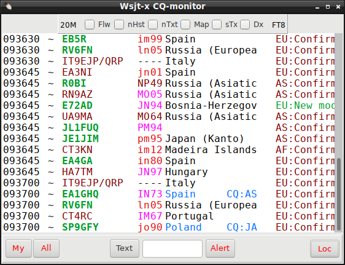
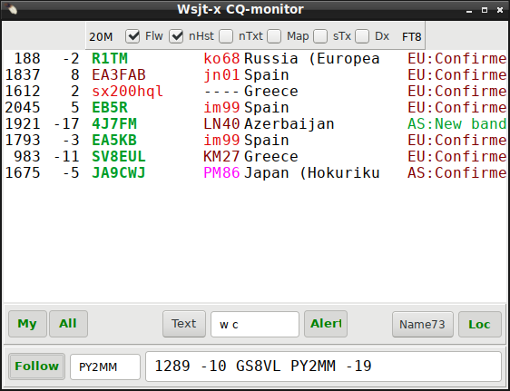

|
WARNING! Backup your data often! BACKUP your log directory at the end of EVERY session! All that you need to backup and store in a safe place is the log database directory located in the ~/.config/cqrlog/database folder, or you can enable the autobackup function in Preferences. This autobackup function creates an ADIF file with a backup of your log. /td> |
| < Prev | [Menu] | Next > |

From New QSO / File select 'Remote mode for wsjt'

Remote mode for WSJT-X-communication is made via UDP dtatgrams that and is supported from WSJT-X 1.5.0 program upwards.
Cqrlog supports WSJT-X UDP remote mode since version 1.9.1

When remote mode is selected it shows last received WSJT-X packet type
number after text “Wsjt-x remote” text. Also color of text changes while receiving packets.
These will show you that UDP link is alive between these programs.
New QSO / Window list

“ Wsjtx monitor “ is visible only if WSJT-X remote mode is selected. Others can be found from there all the time.

Wsjt-x CQ-monitor form opens when you select ”Remote mode for wsjtx” from ”File” of NewQSO window.
You can close this window and reopen it later via NewQSO/Window/Wsjt-x monitor that is visible only when
remote mode is selected. While it is closed it will not update it’s contents.
Only remote logging and call qrz/hamqth seek are used then.
If UPD port opening for remote fails "NewQSO/Comment to qso" will have text “Could not bind socket for wsjtx!"


Checking “flw” new part of monitor opens. This will make easier to follow a DX who does not stay on same frequency, but jumps around answering to callers. You are able to type a callsing, a part of it (text-in-text search) or you can push right mouse button down and paint any call from wsjtx main screen or from CQ-monitor and drag and drop callsing to the left side edit box. After pressing “Follow” (turns green) the call is checked to be written in upcase letters and spaces are trimmed from start and end. Next decoding periods will show a line at right side box if that call is as originating (2nd) callsign and the line is not CQ or for YOUR Call. That box uses same font and size as CQ-monitor. Line contains: decoding_period_time | delta_frequency | the_message. Alerts are not connected to this line. Follow and flw states and callsing are saved over program restart. Line color turns red from default color when corresponding response period is over. This will make easier to follow a DX who does not stay same frequency and jumps around answering to callers. CQ-monitor has known problem of color printing (richmemo unit) that causes CPU load to grow slowly during online hours. For so far solution for this has not been found. How ever you can drop CPU load by just setting NewQSO/File/remote mode for wsjt to OFF and then immediately back to ON. This releases previously used memory and CPU load returns to normal and is a very fast fix that can be done during a reciving period. CQ-monitor has now 20 lines (if “no history” unchecked). Automatic scrollbars are visible if needed.Line of CQ-monitor contains:
CQ-monitor has a new design. Window is adjustable and font + size can be changed.
Font style can not be changed as now “Qso never” (default Green) is printed also with bold while all other texts are in normal style.


Same color coding is applied also for locator grid.
Full locator (means 4 first characters of locator) worked before on this band
and mode, this band but not this mode, some other band/mode and never on any band/mode.
If no hits found for full locator then main locator (2 first
letters) are checked same way next . Worked before on this band
and mode, this band but not this mode, some other
band/mode and never on any band/mode.
Calls and locators that are worked before on this band and mode are also printed in lowercase letters while all others are printed with UPPERCASE.

NOTE: Using monospace fonts will keep monitor columns in
order.
At bottom there are 3 alerts to select. The priority of alerts is same as numbering here. Smaller number overrides previous having highest priority. Alert is executed only once per every decoding section.
Text you have typed is read only after you leave edit box. Then
spaces from start and end are removed and in case of “call alert”
text is changed uppercase.
To activate alert press ”Alert”
to turn it’s text green. (it also takes you away from edit box)


To make alerts do something you have to
add a script file ~/.config/cqrlog/voice_keyer/voice_alert.sh
This
script gets parameter $1 of “my”,”loc”,”text” or “call”
depending of alert given.
By using these parameters with your
script you can play sound that you want, or do anything else you like
to happen when alert is issued.
NOTE: Try to keep
script running time as short as possible.
voice_alert.sh:
--------------------------------------------------------------------------
#!/bin/bash
#
//audio file name (prefix) played on alert
# //can be:'my' =
ansver to my cq,
# // 'loc' = new main grid,
# // 'text'=
text found from monitor line
# // 'call'= text fits to the
callsign
# // create files you want to be played
# scirpt
is seeking names with '.wav' suffix! Change if needed
#select
audio card(if needed) and play alert message
aplay ~/.config/cqrlog/voice_keyer/$1.wav
You can start Wsjt-x qso by double click a CQ-monitor’s line. Wsjt-x will move to callers QRG and initiate TX.

This requires Wsjt-x's Configuration/Settings/Reporting to have at
least “Accept UDP requests” selected.
Setting also “ Accepted UDP request restores window” will return focus from CQ-monitor back to wsjt-x main window.
A line when someone has answered to you (your call is first at Wsjt-x data line) has ”=” sign just at start of callsign and
locator is marked <!!>.
Clicking that line again does not continue qso.
Wsjt-x remote does not allow this kind of command preventing automated qsos. So at this case you have
to go to Wsjt-x screen and initiate report sending by yourself. Or set “auto seg” at wsjt-x/FT8.
Either qso is started from CQ-monitor, or Wsjt-x screen itself, the opponent callsign is added right away to New QSO's callsign field. This way you can see right away if you have had qso with this station on other modes/bands and also all other information like DXCC status, QRZ/HamQTH information etc.
When you either press “Log QSO” at wsjt-x main window, or
get it open automatic when sending 73 by checking Wsjt-x's
Configuration/Settings/Reporting/Prompt me to log qso ,you will have wsjt-x's logging form open.
Check it’s information, add power and remarks if needed. After finishing with it press it’s OK-buttonThen information is transferred to cqrlog.
NOTE: DO NOT press cqrlog/NewQSO/Save QSO [enter] - button to save qso!
If you have enabled auto search from QRZ.com/HamQth.com in cqrlog's preferences all information is fetched during your first transmit (report sending period).
You may alter that information in NewQSO form and it is saved along with wsjt-x logging information.
In case that fetched data has same, but longer locator than wsjt-x qso data has the longer is logged to cqrlog.
I.E wsjt-x data gives KP01, but QRZ.com KP01TN, the longer (more complete) is logged.
If locators differ wsjt-x data is used as it might be a portable or other special qth.
You can set preferences so that cqrlog will start fldigi and/or wsjt-x programs for you when you enter remote mode. This is very handy, but doing that has also one risk.
When fldigi or wsjt-x has been started as a child process of cqrlog they will die at the moment cqrlog crashes for some reason.
If you start them manually as processes of their own and then activate remote mode from cqrlog they keep on running if cqrlog
dies. You can finish your ongoing qso, start cqrlog again, set remote mode on and then log the qso in normal manner.